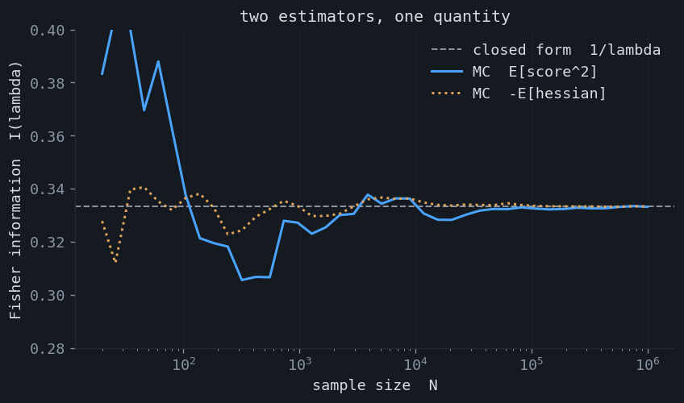
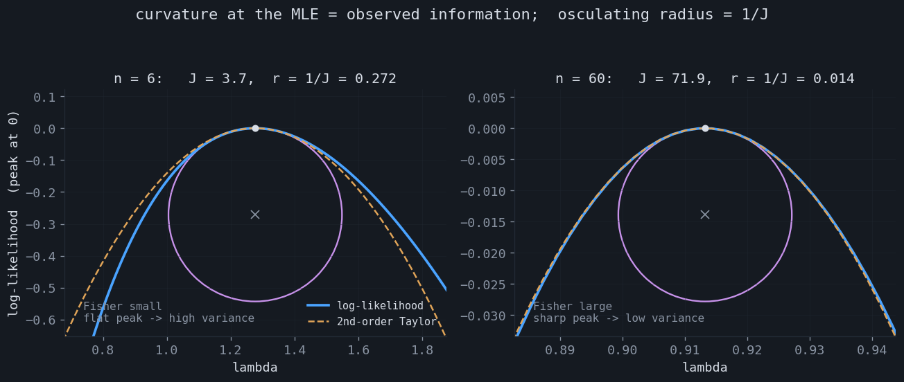
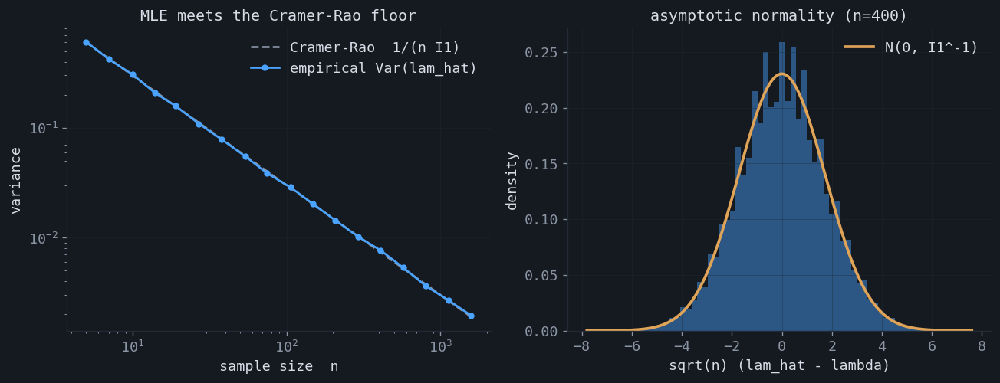
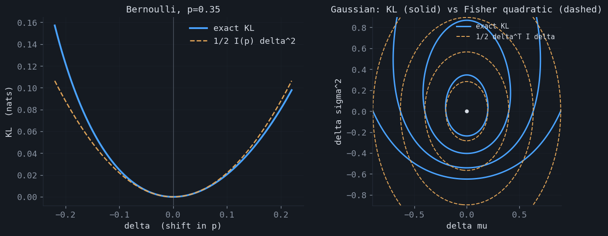
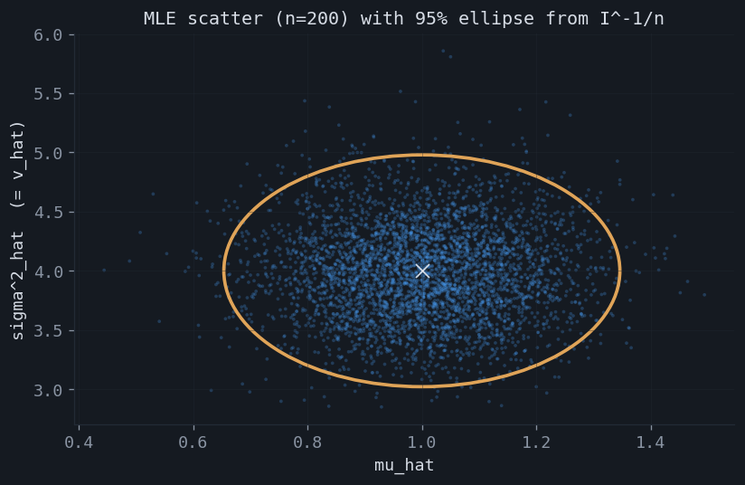
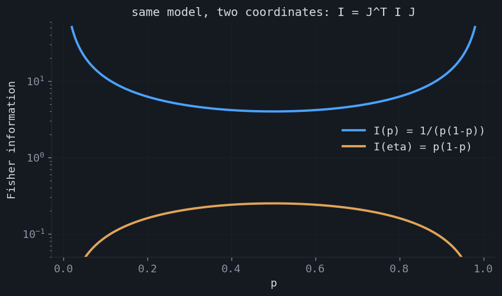
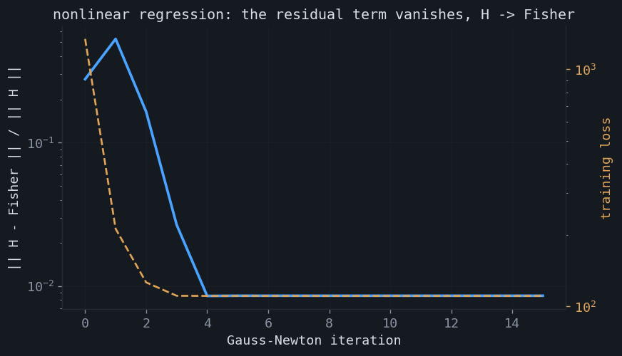

The Fisher information matrix and the Hessian
The Fisher information matrix turns up in three different conversations that rarely mention each other: in statistics it is the precision of the best possible estimate, in information geometry it is the metric that measures distance between distributions, and in machine learning it is the curvature object behind natural-gradient and second-order optimizers. All three are the same matrix, and the cleanest way to see why is to start from the one place it is most concrete: the second derivative — the Hessian — of a log-likelihood.
1.The score and its two moments
Fix a model $p_\theta(x)$ with parameter $\theta\in\mathbb R^d$. The score is the gradient of the log-density,
$$ s(\theta;x) = \nabla_\theta \log p_\theta(x). $$Differentiating the normalization $\int p_\theta(x)\,dx = 1$ under the integral sign gives $\int \nabla_\theta p_\theta = \nabla_\theta 1 = 0$, and since $\nabla_\theta p_\theta = p_\theta\,s$, the score has mean zero: $\mathbb E_{p_\theta}[s]=0$. Its covariance is the Fisher information matrix. Differentiating once more produces a second expression, and the two agree:
The left form is the variance of the score. The right form is the negative expected Hessian of the log-likelihood — the average curvature. The identity holds because $\nabla^2\log p = \nabla^2 p / p - s\,s^\top$ and the first term integrates to $\nabla^2\!\int p_\theta = 0$. This is the whole subject in one line: a variance and a curvature that happen to be the same matrix. Both forms are verified against the closed-form information for four standard models below.

2.Curvature at the maximum
The right-hand form invites a picture. Stop taking expectations and evaluate the negative Hessian of the log-likelihood at the observed data, at the maximum likelihood estimate $\hat\theta$. This is the observed information $J_n(\hat\theta) = -\nabla^2 \ell_n(\hat\theta)$, where $\ell_n$ is the total log-likelihood. Near the peak, where the gradient vanishes, the log-likelihood is a downward parabola:
A curve's curvature at a flat apex equals the magnitude of its second derivative, so the osculating circle at the peak has radius $r = 1/J_n$. The geometry now reads directly. A model that carries little information about $\theta$ has a flat, wide log-likelihood — large radius, broad peak, and an estimate that could have come out almost anywhere. A model rich in information has a sharp spike — small radius, and the estimate is pinned down. The observed information, divided by $n$, converges to the expected information $I_1(\theta^\star)$ by the law of large numbers, so the data's curvature is a consistent estimate of the model's.

3.The inverse is a covariance
Why care about the curvature? Because its inverse is a variance. The Cramér–Rao bound states that no unbiased estimator can have smaller covariance than the inverse information,
$$ \operatorname{Cov}(\hat\theta)\;\succeq\;I_n(\theta)^{-1} \;=\; \tfrac1n\,I_1(\theta)^{-1}, $$and the maximum likelihood estimator attains it in the limit. Expanding the score equation around $\theta^\star$ and applying the central limit theorem to the score gives the asymptotic law
The inverse Fisher information is, quite literally, the covariance of the estimate. This closes the loop with the previous section: the curvature of the peak governs the variance of where the peak lands. The reciprocal relationship — high curvature, low variance — is the content of the two pictures above.

4.The Hessian of the KL divergence
So far $I$ has been the curvature of the log-likelihood. It is also the curvature of something model-independent: the Kullback–Leibler divergence to a nearby distribution. Expanding $D_{\mathrm{KL}}(p_\theta \,\|\, p_{\theta+\delta})$ in $\delta$, the constant term is zero, the linear term vanishes because KL is minimized at $\delta = 0$, and the quadratic term is exactly the Fisher matrix:
This is the statement that promotes the Fisher information from a statistical quantity to a geometric one. It is the unique Riemannian metric on a statistical model invariant under reparameterization (Čencov's theorem), and it is the object on which information geometry is built — see Nielsen's elementary introduction to the subject. Distance on a model is not measured in parameter units; it is measured in how distinguishable the distributions are, and the Fisher matrix is the local conversion factor.

5.The matrix case
With more than one parameter the information is a genuine matrix, and its off-diagonal structure carries meaning. For the Gaussian $\mathcal N(\mu,\sigma^2)$ with both parameters unknown,
$$ I(\mu,\sigma^2)=\begin{pmatrix} 1/\sigma^2 & 0 \\[3pt] 0 & 1/(2\sigma^4)\end{pmatrix}. $$The zero off-diagonal says $\mu$ and $\sigma^2$ are orthogonal parameters: their maximum likelihood estimators are asymptotically uncorrelated, so the confidence region is an axis-aligned ellipse, not a tilted one. The inverse, $I^{-1}/n = \operatorname{diag}(\sigma^2/n,\,2\sigma^4/n)$, reproduces the familiar variances of the sample mean and the variance estimator. The information matrix and its negative- Hessian twin are confirmed by Monte Carlo, and the inverse predicts the spread of the estimates exactly.

6.A tensor, not a number
A subtlety the single-parameter pictures hide: the information is not attached to "the parameter" but to the distribution. Reparameterize $\phi = \phi(\theta)$ with Jacobian $J = \partial\theta/\partial\phi$, and the score transforms by $J^\top$, so the information transforms as a metric tensor:
For Bernoulli, $I(p)=1/(p(1-p))$ explodes at the edges $p\to 0,1$; in the natural parameter $\eta=\log\frac{p}{1-p}$ it becomes the tame $I(\eta)=p(1-p)$. Same model, different coordinates, different numbers. The payoff is the natural gradient $I^{-1}\nabla L$: under the tensor law the ordinary-gradient direction depends on the chosen coordinates, but the natural-gradient step induces the same change in the distribution regardless of parameterization. It is the steepest-descent direction measured in KL rather than in parameter distance, which is why it underlies natural-gradient methods and their practical approximations such as K-FAC.

7.The Hessian in machine learning
Training a model by minimizing a negative log-likelihood loss makes the connection operational. For logistic regression the Hessian of the loss is $X^\top\!\operatorname{diag}\!\big(\sigma_i(1-\sigma_i)\big)X$, which is exactly the conditional Fisher information — the model is linear in its parameters, so there is no residual term and the Hessian is positive semidefinite for free. For a nonlinear model $f_\theta$ the Hessian of the squared-error loss splits in two,
$$ \nabla^2 L \;=\; \underbrace{\tfrac1{\sigma^2}\textstyle\sum_i \nabla f_i\,\nabla f_i^\top}_{\text{Fisher / Gauss–Newton}} \;-\; \underbrace{\tfrac1{\sigma^2}\textstyle\sum_i r_i\,\nabla^2 f_i}_{\text{residual term}}, $$where $r_i = y_i - f_\theta(x_i)$ are the residuals. The first piece is the Gauss–Newton matrix, which for an NLL loss is the Fisher information. The second piece is weighted by the residuals, which have mean zero under the model, so as training drives the fit toward the data the residual term averages away and the Hessian collapses onto the Fisher matrix. This is why the Fisher / Gauss–Newton matrix is the standard curvature surrogate: it is positive semidefinite by construction, it requires only first derivatives of the model, and near a good optimum it is the Hessian.

★Summary
| View | What the Fisher matrix is |
|---|---|
| Score | the covariance of the gradient of the log-likelihood |
| Curvature | the negative expected Hessian of the log-likelihood |
| Observed information | that Hessian at the MLE; its osculating radius is $1/J$ |
| Cramér–Rao / asymptotics | $I^{-1}$ is the variance floor and the MLE's asymptotic covariance |
| Information geometry | the Hessian of KL; the invariant metric on a statistical model |
| Reparameterization | a tensor, $I_\phi = J^\top I_\theta J$; makes the natural gradient coordinate-free |
| Machine learning | the Gauss–Newton matrix; the loss Hessian minus a zero-mean residual term |
The accompanying notebook reproduces every claim here: the equality of the two forms for four models, the curvature picture and its osculating circles, the Cramér–Rao bound and asymptotic normality, the KL-Hessian identity in one and two dimensions, the $2\times2$ Gaussian information matrix and its confidence ellipse, the reparameterization tensor law with natural-gradient invariance, and the Gauss–Newton decomposition of a nonlinear-regression Hessian: experiments.ipynb.